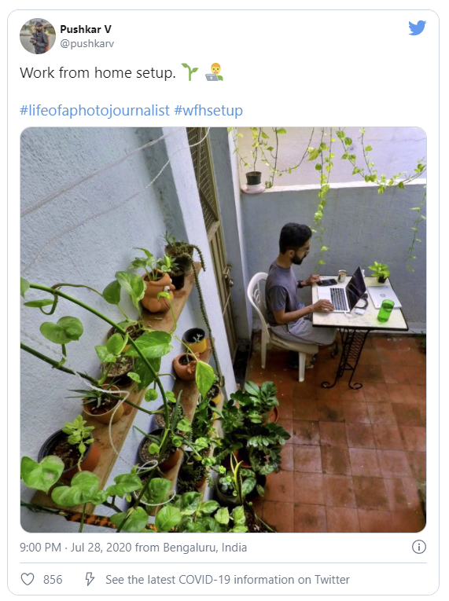

What is the best thing about working from home? Most probably, the level of comfort.
But, do you know that this comfort can come at the cost of lost productivity, focus and target goals?
As much as home working is a convenience for many as they can coop up in their bed or couch, it becomes really difficult to resist the temptation of sleep with our not-so-healthy sleep routine.
That way, you can either give in to your lethargy - which is extremely demotivating - or decide to come out of the enticement of your typical home setting. The latter is always better and more productive.
You might sit at any place, start working on your task list, and all of a sudden, a movie or an ad plays on TV. What is your instant reaction?
You turn around and take a glimpse, thus creating a distraction. It is likely possible to happen every now and then if you choose a random spot to work. Distractions will flow in from every way.
Therefore, having a particular space all to yourself will absolutely do a great deal.
When the surrounding gives you work vibes, your attention is bound to swoop in along with your efficiency. To achieve that, all you have to do is:
A dedicated workspace will enable you to keep yourself oriented to your work by providing an office-esque environment.
Because in the end, concentration is the key to effective outcomes.